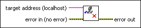

Disable Variable Forcing VI
Owning Palette: Forcing VIs
Requires: Base Development System (Real-Time, Windows)
Disables forcing for I/O variables and I/O aliases on the target. Unless you clear forcing, the previous forced values return when you re-enable forcing.

 Add to the block diagram Add to the block diagram |
 Find on the palette Find on the palette |